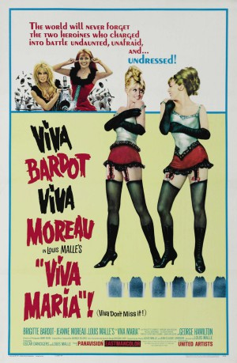

#6489 Viva Maria!
Auszeichnungen: 1 BAFTA-Awards gewonnen
 
 IMDB-Wertung: 6.4 / 10
IMDB-Wertung: 6.4 / 10  Metascore: 0
Metascore: 0 
Da beide Schönen den gleichen Vornamen haben, heißen sie fortan Maria I und Maria II. Bei ihrem ersten Auftritt gerät Maria II beträchtlich ins Schwimmen. In ihrer Verzweiflung hat sie eine spontane Idee, mit der sie die Männer im Saal zum Toben bringt: Der Striptease ist geboren! Animiert von diesem Erfolg, beginnt Maria II nun auch die Freuden der Liebe zu kosten. Bei dem schönen Revolutionär Florès, den die Damen unter dramatischen Umständen kennenlernen, hat Maria I allerdings die größeren Chancen. Als er allzu früh stirbt, nimmt er ihr das Versprechen ab, an seiner Stelle die geplagte Landbevölkerung gegen den schurkischen Don Rodriguez und die Truppen des Diktators von San Miguel zu führen. Maria II findet zwar, dass diese Rolle eher ihr zukäme, aber sie schmollt nicht lange und bombt drauflos wie in alten Zeiten. Umjubelt von einer wachsenden Anhängerschar, marschieren die beiden Amazonen von Sieg zu Sieg.
Jahr: 1965
Dauer: 116 Minuten
FSK: 16
Land: Frankreich Studio: UIPTonspuren:
Untertitel: Deutsch,
Auflösung: 1080p (1920x816) Größe: 6717 MB
Genre: Komödie, Abenteuer, Western, Liebe
Regisseur: Louis Malle
Drehbuch: Louis Malle
Soundtrack:
Darsteller:
- Brigitte Bardot als Maria I
 Jeanne Moreau als Maria Fitzgerald O'Malley aka Maria II
Jeanne Moreau als Maria Fitzgerald O'Malley aka Maria II George Hamilton als Flores
George Hamilton als Flores Paulette Dubost als Mme Diogène
Paulette Dubost als Mme Diogène- Gregor von Rezzori als Diogène
- Poldo Bendandi als Werther
 Claudio Brook als The Great Rodolfo
Claudio Brook als The Great Rodolfo- Carlos López Moctezuma als Rodríguez
- Jonathan Eden als Juanito Diogène
- Francisco Reiguera als Father Superior
- Adriana Roel als Janine
- José Baviera als Don Alvaro
- José Ángel Espinosa 'Ferrusquilla' als The Dictator of San Miguel
- Fernando Wagner als Father of Maria II
- Roberto Pedret als Pablo
- Luis Rizo als Strongman
- Ramón Bugarini als Minor Role , uncredited
- José Luis Campa als Scout Soldier , uncredited
- Roberto Campa als Scout Soldier , uncredited
- José Esqueda als Scout Soldier , uncredited
- Eduardo Murillo als Scout Soldier , uncredited
- Carlos Riquelme als Town Major, in railroad station , uncredited
Datei: X:\HD-Western-1960-1979\Viva Maria! (1965, FSK16, 1920x816).mkv seit 28.06.2017
Festplatte: HD Eastern+Western
 Es gibt insgesamt 110 Filme in der Gruppe 'HD-Western-1960-1979'
Es gibt insgesamt 110 Filme in der Gruppe 'HD-Western-1960-1979'